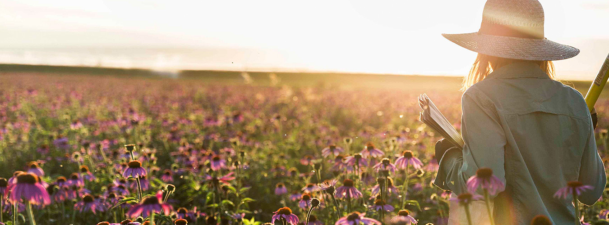
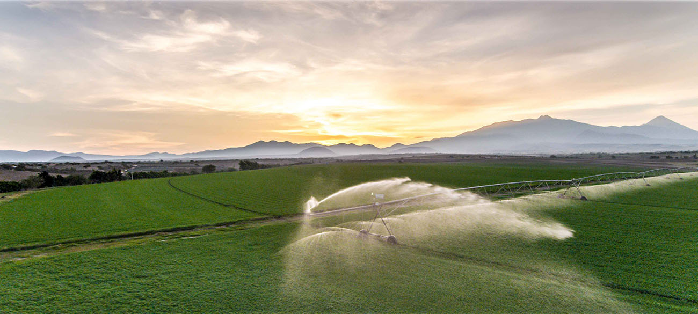
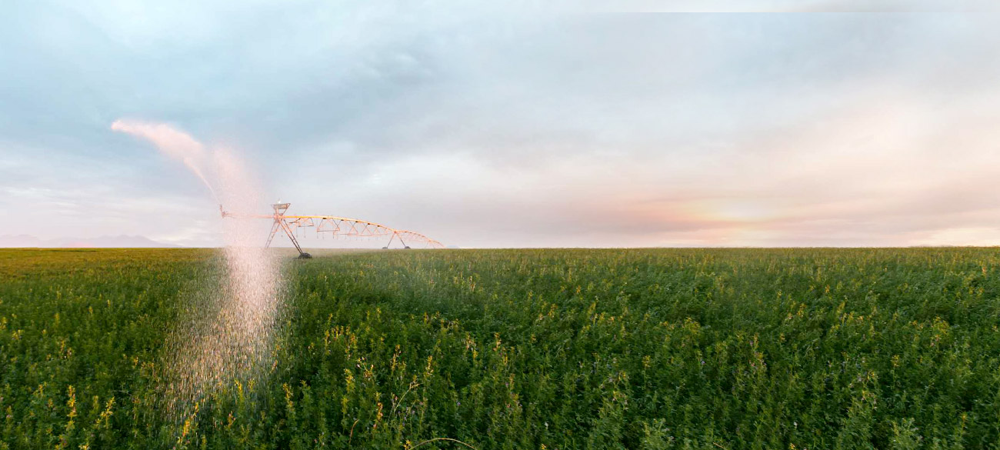

NATURE
天然菁華
為了獲得純淨、高營養價值的植物原料，紐崔萊在全球開創超越有機標準的永續農耕系統！
紐崔萊有機農場
紐崔萊是全球唯一在自有有機農場栽種、採收及生產植物原料的維生素/礦物質品牌＊，萃取天然優質植物原料，用自然守護健康！
*宣稱來源為歐睿國際有限公司www.euromonitor.com/amway-claims
立即探訪

永續農耕系統
紐崔萊堅持超越有機的永續經營理念，注重生態、社會和經濟的和諧永續，並尊重大自然，從整土、灌溉施肥、採收與休耕，讓作物飽含大自然能量，培育出優良的植物原料，成為有機農耕的最佳典範。
永續農耕的九大要素
分享至